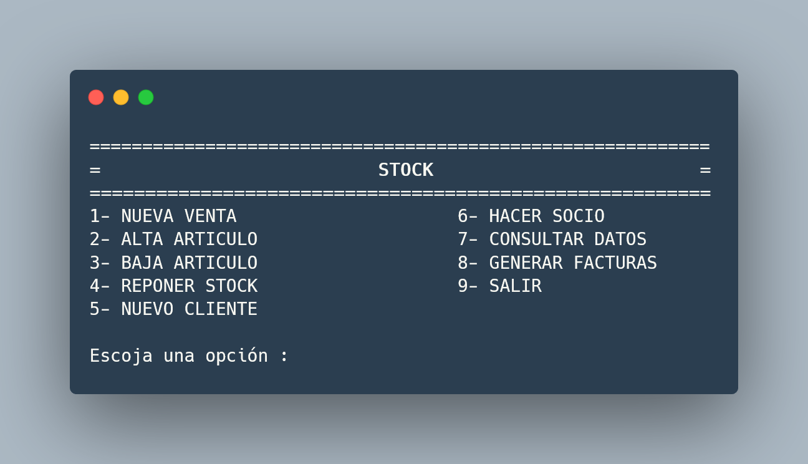

La aplicación diseñada se encarga de la gestion realizada sobre una tienda de ropa. Su uso esta orientado
a la parte del vendedor, es decir el menú al cual ellos accederían para realizar distintas tareas. Tales como
altas y bajas de articulos, reposicion de stock, alta de clientes ...
La parte de interaccion con el vendedor es un simple menú que permite realizar las distintas opciones mencionadas arriba.
Para salir de este basta con pulsar la tecla X siempre que no estamos llevando a cabo la inserción de nuevos elementos,el
sistema volveŕa al menú inicial.
Para conseguir la utilidad buscada con el diseño de esta aplicación todas las acciones que se hacen durante cualquier ejecucíon
son almacenadas en ficheros mediante la serializacion de estructuras de datos,gestionadas a nivel interno, con esto se consigue
el mantenimiento de los datos para asi, preservar en el tiempo nuestras acciones dando igual la cantidad de ejecuciones realizadas.
Es muy importante para el correcto funcionamiento de la aplicación que la salida de esta sea mediante el menu pulsando la tecla 9.
